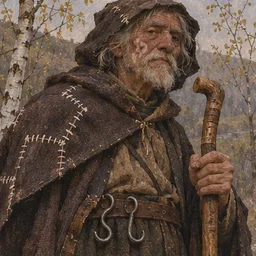
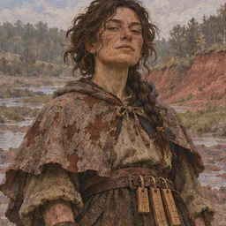
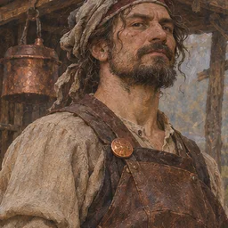
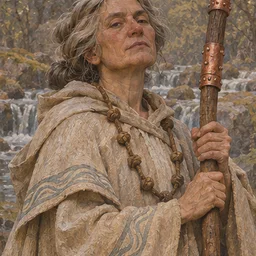

Вечер 1
Незнакомая знакомая
Защитить право Орсы говорить за себя, устроить безопасный круг и выбрать способ начать охоту.
Открыть сценарий →В Лощине Тихой Меди колокола не дают именам пропасть из чужой памяти. После глухой грозы под вечерним звоном поселилась чужая тень: она зовёт знакомыми голосами и меняет повадки, когда ей отвечают. Жителям и гостям долины предстоит выследить её, защитить соседей и решить, можно ли жить рядом с тем, кто научился голодать по человеческим именам.

Перед чтением вступления сверьте место героев, присутствующих людей и предметы с итогом прошлого вечера. Если условия встречи отпали, сыграйте последствия там, где находится партия. Событие по расписанию может произойти за кадром. Герои узнают о нём от тех, кто был на месте.
Попросите показать, кто уже вышел за огни и какие знаки узнавания действуют. Группа может провести ночь вместе с ними. Утром сначала назовите тех, кто вернулся к своим, а вопрос о тени оставьте открытым.
Не пойдём с зовущими. Останемся у дверей тех, кто не хочет откликаться. Ставим у двери немой знак для желающих войти. На этом крыльце вслед никого не назвали. Вдали продолжает звонить колокол, и о судьбе чужих домов у нас нет вестей.
Сравним звон без обращения с правилом детской игры. Попробуем оба случая на пустом крыльце без имени человека. Доступные свидетельства — Колокол без обращения, Дощечка игры «Не зови вслед». Ответ даёт тени голос. Свободным последним ударом можно направить Гостя к выбранному эху. Просим двух пастухов повторить опыт с эхом. Жители сами ставят опыт и выбирают способ звать близких. Гостю не обещают имя в обмен на помощь.
Тень заняла дорожку у ручья, позднего прохожего отрезало от нас. Зажигаем фонари по берегам и ждём ответа добровольца. Ставим фонари с двух берегов и ждём добровольного ответа. Слышим один голос и отвечаем только ему; переход у сада ещё закрыт.
Для игры без подготовки: что говорят люди, места в стороне от главной дороги и прохожие. Пометки о правде слухов — только для ведущего; сказанное за столом становится фактом мира, лишь когда вы его подтвердите.
«Колокола у нас держат имена, как плетень держит овец. Замолчал звон — вот люди и перестали друг друга узнавать».
Отчасти правда. Звон и правда хранит узнавание соседей, но имена уносит Незваный Гость, проголодавшийся после глухой грозы; само молчание колокола никого не стирает. Это слова стариков из пролога, хороший повод отправить героев к Дарье в Дом шести ударов.
«Кто откликнется на свой голос из тумана, у того к утру брови поседеют. Вот увидите, по бровям и узнаем, кто отвечал».
Неправда. Суеверие. Откликнувшийся лишь даёт тени Чужой голос и уводит её след за собой; Лавр однажды ответил и остался прежним. Удобная реплика испуганного соседа, которую любой знающий спокойно развеет.
«Гроза была глухая, без капли дождя. Старики говорят, такой гром идёт не с неба, а из-под холмов».
Отчасти правда. Гроза без дождя действительно была, с неё всё и началось. Откуда шёл гром, никто не знает; что гроза оборвала привычную пищу тени, Гость может сказать сам в вечере 4 или 7. Новой разгадки слух не даёт.
«В последний осенний вечер звонари отпускают последний удар за огни и при нём не называют ни одного имени. Так ещё прадеды делали».
Правда. Открытый обычай из пролога; Лавр рассказывает о медной миске в вечере 4. Слух объясняет, почему перемирие мыслимо, но не доказывает, что нынешний Гость его соблюдёт.
«Беда через ручей не ходит. Нам в детстве так говорили, когда мы бегали в сад после заката».
Отчасти правда. Верно лишь для немой Стаи складок: она останавливается перед текущей водой. В двух других состояниях тень ищет сухие обходы и мосты. Присказку повторяет Лавр в саду; правило целиком дают маршруты вечеров 2–4.
«У Весны на мельнице чашки сами по себе звенят и рябят по ночам. Не иначе в пруду водяной поселился».
Отчасти правда. Круги в чашках настоящие: это опыты Весны с выдуманными обращениями, без человеческих имён. Водяного нет. Слух ведёт к мельничному маршруту вечера 3, где Весна сама всё показывает.
«Лавр сорок лет обходил сад ночами. Он знает, где каждая груша кладёт тень на тропу, хоть глаза ему завяжи».
Правда. Так и есть; Лавр сам говорит об этом в вечере 2. О брошенном плаще слух молчит: эту историю он рассказывает только сам, когда группа встретит его в саду.
«Свой знак со стола до звона не уносите. Унесёшь — и хозяина его забудут ещё до утра».
Неправда. Суеверие, родившееся после истории Орсы. Тень удерживает отзвук знака, а не деревянную дощечку; знак можно носить с собой без всякого вреда. Хорошо звучит из уст встревоженной соседки у хлебного стола.
«В Доме шести ударов звонарей учат звонить с закрытыми глазами: узлы на верёвках разные, их ладонью узнаёшь».
Правда. Обычай звонницы из описания Дома шести ударов; Дарья рассказывает о нём в вечере 1. Это колорит, а не способ охоты.
«В Каменную Глотку даже овец не гоняют. Эхо там отвечает по три раза, и скотина шарахается от собственного топота».
Правда. Верно: теснина необитаема, эхо долгое. Ада подтверждает это в вечере 4 и знает огороженную верхнюю тропу. Готового плана изгнания слух не даёт: его ещё надо осмотреть и проверить.
«У Севира под навесом висят сотни негодных колокольцев. Ударь по всем разом — и тень сама уйдёт из Лощины».
Неправда. У негодных колокольцев нет языков, они не звенят. Тупика здесь нет: под навесом Севира в вечере 6 герои найдут настоящие инструменты для выбранного способа охоты и честную цену их использования.
«Боруна трижды звали к дальней сушилке чужим голосом. Он теперь и днём туда без провожатого не ходит».
Правда. Борун сам говорит об этом в вечере 1, когда просит помочь с мукой. Слух напоминает об обещании, которое вернётся в ночь чужих голосов, вечер 5.
Длинная скамья у крайнего дома, там, где дорога с пастбища выходит к огням. Здесь сидят те, кто ждёт своих с поздней работы, и у каждого места вбит крючок для фонаря. Спинка скамьи отполирована плечами до блеска. По обычаю, кто дождался, ставит на сиденье ножом чёрточку, и за много лет скамья покрылась ими сплошь, как вышивкой.
Низкая пекарня с тремя стёртыми ступенями, где по очереди с доски пекут хлеб для общего стола. Печь здесь не гаснет с осени до весны: пекари передают кочергу из рук в руки, как звонари верёвку. Первую ковригу каждого вечера кладут на стол целой и ломают только после звона. Над дверью висит медный колокольчик, которым зовут за горячим.
Два десятка ульев-колод среди вереска, на солнечном склоне над садами. Хозяин пасеки по старому обычаю рассказывает пчёлам все новости Лощины, хорошие и дурные, иначе, говорят, пчёлы обидятся и улетят. Колоды помечены теми же знаками, что лежат на общем столе. Отсюда хорошо видно туман, когда он поднимается из долины к окнам.
Валун у тропы к Дому шести ударов с вбитым железным кольцом, к которому привязана старая верёвка с узлами. Здесь ученики звонарей учатся различать узлы ладонью, с завязанными глазами, и звонят в пустоту: колокола на кольце нет. Камень вокруг кольца стёрт верёвкой до гладкой ложбинки. Мимо него ходят тихо, чтобы не сбить учеников со счёта.
Плоские камни у ручья ниже сада, где женщины Лощины полощут бельё и колотят его вальками. Камни отполированы до блеска, на каждом выбит знак семьи, которая им пользуется. Здесь узнают новости раньше, чем на площади: кто вернулся, кто захворал, кому пора свататься. Зимой у воды разводят маленький костёр, чтобы отогревать руки.
Длинная поленница вдоль глухой стены за площадью, сложенная всей Лощиной на зиму. У каждой семьи свой участок, отмеченный колышком с деревянным знаком, а общий край берут для фонарей и пекарни. Кто берёт лишнее, должен вернуть два полена за одно, и это правило помнят даже дети. Между поленьями зимуют синицы и вылетают на звук шагов.
Широкий седой пасечник в войлочной шляпе с сеткой, за пазухой тёплый горшочек мёда, на рукавах налипли сухие пчёлы.
«Пчёлам я уже рассказал. Теперь, так и быть, расскажу вам».
Может рассказать: Видел с гряды, что туман в вечер глухой грозы лёг на долину раньше обычного и долго не поднимался выше окон.
Румяная пекарша с мукой в бровях, в переднике с вышитой подковой; руки всегда тёплые от печи.
«Хлеб ломают после звона. А звона нет — так что ж, людям голодными сидеть?»
Может рассказать: Знает, кто из соседей в какой день носит хлеб к общему столу, и может прочесть доску очередей быстрее любого.
Сутулый возчик с перевязанным ремешком запястьем и вечной соломинкой в зубах; от него тянет дёгтем.
«Колесо смазать — дело минуты. А вот дорогу смазать никто не умеет».
Может рассказать: Знает, что обе грузовые тележки на площади исправны, а у левой туго ходит оглобля, если её не придержать.
Худенькая девушка лет пятнадцати в огромном отцовском тулупе, с берестяным рожком на шнурке и прутом в руке.
«Овцы умнее нас: на чужой голос они не оборачиваются, только на рожок».
Может рассказать: Знает, что у пастушьего навеса каждый путник оставляет полено и свой знак на дощечке, и умеет читать эти знаки.
Пухлый мастер в закапанном воском фартуке, с пучком фитилей за ухом и масляным пятном на щеке.
«Фонарь без заслонки — что язык без зубов: светит всем подряд».
Может рассказать: Заправляет фонари площади и знает, что большого фонаря хватает на целую ночь, если не крутить фитиль выше пальца.
Крепкая прачка с закатанными по локоть рукавами, красными от холодной воды руками и деревянным вальком за поясом.
«У воды всё слышно, милые. Ручей молчать не умеет, и я с ним заодно».
Может рассказать: Полощет бельё у ручья ниже сада и помнит, что в Лощине на её памяти этот ручей ни разу не пересыхал.
8 сессий по 150 минут: 15 минут на согласование границ и вступление/повтор, сцены 35 + 40 + 35 минут, перерыв 10 минут, завершение 15 минут. Необязательное столкновение заменяет препятствие средней сцены. Подготовленные герои — уровень 3. Прочитайте первую сессию, выберите состав и передайте игрокам отдельную страницу героев.
В мастерской создайте или откройте свой черновик, выберите импорт пакета и укажите package.json либо нужный файл из variants. Проверьте сценарий и состав в предпросмотре; активацию подтверждает ведущий. Сюжетные развилки, часы давления и жанровые действия разрешаются ведущим — они не становятся автоматически сыгранными событиями.
Пакеты разных размеров используют первые N героев в порядке карточек. Дополнительные герои дают новые роли, но не обязательные ключи к истории. Выбор произвольного состава требует правки черновика и повторной проверки.
Народный ужас, преследование среди знакомых мест, странные голоса и товарищеская смелость. Никакой охоты на детей: тревога направлена на тайну и выбор, а тепло возникает из поступков людей, помогающих друг другу без владения чужим именем.
Защитить право Орсы говорить за себя, устроить безопасный круг и выбрать способ начать охоту.
Открыть сценарий →Проследить полный цикл Гостя на местности и решить, что допустимо использовать приманкой.
Открыть сценарий →Получить независимую проверку повадок, испытать безымянную приманку и решить судьбу рабочего места Весны.
Открыть сценарий →Узнать полный охотничий порядок через живую традицию, проверить водную границу и отделить возможное перемирие от доверия на слово.
Открыть сценарий →Применить изученные повадки для защиты живой общины и увидеть разницу между спасением людей и спасением всего имущества.
Открыть сценарий →Выбрать рабочий способ закончить охоту, испытать его и подготовить запасной выход без обязательной жертвы.
Открыть сценарий →Довести предметную приманку до выбранного места, проверить реальную реакцию Гостя и сохранить право изменить финальный план.
Открыть сценарий →Совершить выбранный финальный поступок, принять его реальные последствия и дать каждому герою личный эпилог.
Открыть сценарий →Только для ведущего. Сюжетные повороты держатся на мелочах, замеченных заранее: посейте их в названные вечера, а раскрытие отдайте героям, если они догадались раньше.
Остановленный звон и голос с пустого крыльца наводят на мысль, что старый осенний обычай был тайной сделкой — платой Гостю людьми или их именами, которую скрывали звонари. На деле это была честная взаимность: община отпускала один безымянный звон, а Гость собирал блуждающие эха за огнями. Дарья остановила звон от испуга, а не чтобы что-то скрыть.
У огней брода Лавр показывает «Миску последнего звона» и рассказывает обычай, как он был: один удар без имени, уход к огням вместе, никто не остаётся платой. Если герои уже подозревают Дарью, пусть она сама подтвердит при следующей встрече: «Я остановила звон, потому что крыльцо ответило моим голосом. Испугалась. Никакой сделки не было». Не превращайте это в разоблачение: разоблачать нечего.
Перемирие становится мыслимым, а не постыдным. Дарья перестаёт прятать глаза и в седьмом вечере сама вызывается сказать Гостю «нет». Орса при этом не обязана никого прощать: обычай объясняет голод тени, но не оправдывает похищенный знак.
Когда тень заговорит голосами соседей и повторит обещание, данное у фонаря, стол решит, что Гость знает всё — мысли, планы, имена. Он не знает ничего, кроме услышанного вслух: копирует фразы, идёт за последним откликнувшимся знаком и теряет след после нового приветствия. Новых знаков, тайных приманок и чужих воспоминаний ему не взять.
Скорее всего это становится ясно в сцене «Просьба, которую никто не произносил»: Борун слышит за сушилкой голоса героев и просит сказать прямо, кого он слышит. Новое приветствие у света обрывает голос на полуслове — нового знака Гость не знает. Дарья подводит итог: «Он помнит, как это звучит. Не что это значит». Если герои догадались раньше, пусть сами предложат проверку новым знаком, а Дарья с облегчением её поддержит.
Страх сменяется правилом: что не сказано вслух у теней, то Гостю не достанется. Жители договариваются жестами и записками и обновляют знаки после каждой ночи. В седьмом вечере это главное преимущество героев: Гость не знает, какую приманку ему приготовили.
Гость выглядит хищником, который ворует имена ради забавы. На деле это старый собиратель отзвуков, которого глухая гроза оставила без пищи: безымянные эха перестали приходить, и он потянулся к живым обращениям. Он голоден, а не мстителен, — и способен вернуть удержанный знак, если получит другую пищу и выдержит отказ.
На площадке Звонницы Последнего Воздуха «Круг незавершённых царапин» показывает, как изменилась пища тени, а Гость в Чужом голосе говорит своими словами: «Раньше мне оставляли звон без имени, и я уходил за огни. Гроза оборвала звоны». Не делайте из этого раскаяния: он помнит предел огней, но признаёт, что не всегда его соблюдал. Проверка — поступком: вернёт ли ветвь, выдержит ли отказ.
Выбор финала становится настоящим: ловушка, перемирие и изгнание — три разных ответа голодному соседу, и ни один не обязателен. Орса вправе отказаться от любого прощения, Дарья и Лавр склоняются к старому обычаю, Севир и Ада предлагают надёжность меди и воды. Стол решает, чем готов платить.

Высокая женщина с медной заколкой и поясом звонарных инструментов.
Следит за звонницей и учит различать узлы на верёвках ладонью.
Удержать огни вокруг домов и не отдать страху право решать, кого считать своим.
При первой встрече. «Звонить меня учили с закрытыми глазами. Сейчас держу их открытыми — и всё равно не вижу, кто отвечает с крыльца».
О Доме шести ударов. «Шесть верёвок, на каждой свои узлы. Ладонь помнит их лучше головы. Забуду своё имя — верёвки меня узнают».
О последнем звоне. «Каждую осень отпускали один звон за огни, без имени. Я думала, это просто обычай, как первый блин на соседей».
Когда спросили об испуге. «Я остановила звон, потому что крыльцо ответило мне моим голосом. Испугалась. Не договор, не тайна — просто испугалась, как все».
Если устраивают допрос. «Не устраивайте друг другу дознаний — это хуже тени. Подойди к свету, поздоровайся по-новому, и хватит».
Об Орсе. «Мы с Орсой поздоровались у фонаря заново, и я её узнала. Медленно, как узнают человека после долгой дороги».
На прощание. «Вечером позвоню, как всегда, и скажу с крыльца своё. Пусть теперь отвечают только живые».
Она прервала осенний последний звон, когда услышала ответ своим голосом с пустого крыльца. Это был испуг перед неизвестным, а не попытка скрыть договор или навязать кому-то плату.
Не знает всех состояний Гостя, не читает мысли тени и не знает, какой будущий замысел сработает.
По просьбе воспроизводит последовательность на незвучащей верёвке и рассказывает об испуге. Не требует обещания вернуть старый обычай.

Плащ с белой штопкой, трость с неглубокими зарубками и два фонарных крючка на поясе.
Бывший ночной обходчик, знающий места, где тень деревьев перекрывает тропу.
Передать опыт так, чтобы молодые не повторяли его привычку доказывать смелость одиночеством.
При первой встрече. «Сорок лет ходил ночами с фонарём. Каждую тень в Лощине знаю, как соседа. А одну, выходит, не знал».
О саде. «У третьей подпорки и у ручья тень груши ложится на тропу. Там и смотрите. В других местах она честная».
Когда спросили об отходе. «Позвали моим голосом: „Лавр, обход!“ Я откликнулся. Потом скинул плащ и ушёл к фонарю. Убежал, если честно».
Если хвалят его бегство. «Не надо. Я всю жизнь думал, что обходчик не бегает. Дайте мне привыкнуть к мысли, что иногда — бегает».
О присказке. «В детстве говорили: беда через ручей не ходит. Я думал, чтобы мы в воду не лазили. А оно вон что».
О миске. «В последний осенний вечер звонарь бил в эту миску один раз, без имени. Мы мальчишками думали — для красоты».
На прощание. «Идите к свету по зарубкам. Каждая — на шаг. Двадцать шагов, и вы у фонаря».
В первую ночь после грозы он ответил своему голосу из сада и бросил любимый плащ, чтобы уйти. Плащ остался в саду; Лавр стыдится своего бегства, хотя оно спасло его.
Его рассказ ограничен пережитой ночью: он не видел, что было после ухода, и не знает условий ловушки или перемирия.
Рассказывает маршрут при вопросе о безопасном отходе. Не просит вернуть плащ ценой риска и соглашается, что отступление тоже было решением.

Короткая накидка в пятнах глины, тяжёлые сапоги и пояс с деревянными мерками.
Сушит чашки на верхнем настиле мельницы и разрешает пользоваться сухим навесом.
Проверить повадки странного эха и сохранить рабочее место без риска для людей.
При первой встрече. «Сапоги о порог. Настил мокрый, чашки сырые, а я злая, когда бьют посуду. Теперь заходите».
Об опыте. «Я гончар, а не мудрец. Поменяйте одно условие — и посмотрим, что сломается первым: моя догадка или чашка».
О журнале. «Человеческих имён не брала, только выдуманные: Пятнистая Коза, Сосед с горы. Тень на них откликалась не хуже».
О мастерской. «Руки и доски приму. Мастерскую не отдам. Она моя, даже если вы спасаете всю Лощину».
О будущем. «К весне сделаю свадебные чашки для верхнего хутора, с тройным узором: волна, черта, круг. Если весна будет обычной».
Если просят колокол. «Он из первой отливки Севира. Вернёте — хорошо. Не вернёте — сделаете новый. Так или иначе, он мой».
Она замечала крошечную тень в пустом колоколе и уже поставила несколько опытов с выдуманными обращениями. Человеческие имена в опыт не вводила; не знает, можно ли доверять говорящей тени.
Знает результаты малого опыта, а не гарантии большой ловушки; не знает тайных планов других людей.
Даёт приборы и журнал по просьбе поставить опыт. Для доступа достаточно договориться о сухой площадке, свидетелях и пустых знаках.

Шерстяной жилет, хозяйственная доска и слишком короткий карандаш за ухом.
Считает запас муки и добровольцев для общих работ.
Уберечь припасы и людей, хотя ему трудно согласиться оставить вещь, которую можно ещё спасти.
При первой встрече. «Сначала скажите, сколько вас и сколько вы едите. Потом — кто вы. У меня доска, а не исповедальня».
О запасах. «В кладовой хватит всем до весны, я считал дважды. Но на сушилке мука, которую мы мололи всем миром».
О голосе. «После грозы меня трижды звали к пустой сушилке. Моим голосом. Я не пошёл. Но и уши не заткнул».
Если ему отказывают. «Тайком не пойду. Скажите мне „нет“ в лицо — или скажите, как идти. Третьего мне не надо».
Когда признаётся в замысле. «Если никто не поможет, сам пойду за мешками. Ещё не пошёл. Но собирался, и вы бы это поняли по моим сапогам».
Если помогли. «Хлеб донесли? Запишу вам строчку на доске. Пусть хоть одна будет не пустая».
После ночи. «Мука на сушилке осталась. Люди все здесь. Так и запишу: сначала люди».
Он намерен сам вынести мешки с дальней сушилки, если их не успеют забрать. Это ещё не совершённое действие; при ясном плане охотно принимает помощь и безопасный отказ.
Не знает намерений Гостя и не может обязать других рисковать. Его хозяйственный прогноз не является автоматическим таймером.
Открыто показывает запасы и маршруты, когда герои предлагают план защиты. Признаёт свой замысел после вопроса, за чем ему труднее всего не вернуться.

Плащ с узором из тёмных ромбов, резной знак ветви и плоская фляга на ремне.
Знает пастбищные тропы и приносит воду по общей очереди.
Вернуть обычную жизнь и самостоятельно решить, участвовать ли в охоте или поддерживать безопасное укрытие.
При первой встрече. «Не надо меня спасать. Дайте сесть со всеми и спросите, как ко мне обращаться».
О знаке. «Этот знак я вырезала сама, когда впервые повела стадо одна. Я ношу воду по чётным дням. Я это помню, даже если вы — нет».
Об игре. «В неё играют все пастухи Лощины. Выиграть нельзя. Можно только вовремя уйти домой».
Если сама захочет рассказать. «Перед тем как меня перестали узнавать, я ответила знакомому голосу из кустов. Своему. Больше не спрашивайте, пока я не начну сама».
Если её делают приманкой. «Я не приманка и не знамя. Я пастух. Хотите помочь — помогите нести воду».
Если её благодарят. «Спасибо, что спросили. Не за то, что спасли, — за то, что спросили».
Утром после. «Меня зовут Орса. Я ношу воду. Знак у меня — ветвь, но можете запомнить меня по фляге».
Она помнит себя полностью, хотя некоторые соседи перестали её узнавать; не хочет, чтобы её превращали в живую приманку или символ чужой доблести.
Не знает, кто ещё отвечал тени, и не обещает прощения от лица всех затронутых жителей.
Передаёт правила игры, если спросить о следе или защите. Её собственная история доступна только по её желанию; правила можно прочитать на общей игровой дощечке.

Садовые рукавицы, серый капюшон и лента с нарисованными листьями вместо делений.
Поддерживает старые ветви и записывает местные приметы.
Чтобы её наблюдения проверяли наравне со взрослыми, не назначая ей опасную работу ради доказательства взрослости.
При первой встрече. «Сначала пишем, что видим, потом — что думаем. Перепутаешь — выйдет сказка, а не примета».
О возрасте. «Мне семнадцать, и я могу ошибаться. Проверьте меня — только не затем, чтобы доказать, что я маленькая».
О лентах. «Каждую завязывает тот, кто снял с дерева первый урожай. Эту — моя прабабка. А вон ту — кто-то, чьего имени уже никто не помнит».
О миске. «В миске видно лучше, и тень не знает, что на неё смотрят. Я так за котом подглядывала, когда он воровал сметану».
Если её посылают к тени. «Нет. Я наблюдатель. Смотрю из света, записываю и проверяю. Приманкой пусть будет чашка».
На прощание. «Решайте со мной, а не за меня. И приходите весной — сравню свои записи с вашими».
Она нашла способ наблюдать тень из освещённого сада через отражение в жестяной миске. Никого не посылала к тени и не желает участвовать в живой приманке.
Отделяет наблюдение от догадки о голоде; не знает, сдержит ли Гость обещание.
Показывает точки наблюдения и рисунки по просьбе. Не требует соглашаться с её объяснением, а предлагает повторить безопасную проверку.

Кожаный фартук, повязка на волосах и круглая медная пуговица вместо застёжки.
Чинит хозяйственные инструменты и объясняет устройство вещей простыми словами.
Дать охотникам понятный инструмент и безопасный способ отступить, а не чудесное оружие с неизвестной ценой.
При первой встрече. «Объясняю просто: сложно — значит, сам не понял. Что у вас сломалось — замок, котёл или тишина?»
Когда спросили об оснастке. «Колпак я собирался отдать на переплавку. Возьмёте под ловушку — мастерская останется без меди на весь сезон».
О правиле. «Рычаг снаружи, люди снаружи, внутри — только эхо. Кто полезет внутрь проверять, тому я сам закрою дорогу в мастерскую».
О смене. «Ловушку мало закрыть. У неё должен быть сторож, а у сторожа — смена. Иначе на третью ночь кто-нибудь задремлет и позовёт её вслух».
О страхе. «Боюсь, конечно. Что моя медь сработает хуже, чем я обещал. Потому и проверяем, а не хвастаемся».
После охоты. «Мастерская пустая. К лету наберу. Колокольцы подождут — они терпеливые, как и я».
Он сохранил тяжёлый глухой колпак, хотя собирался отдать его на переплавку. Колпак можно использовать для удержания эха, но это оставит мастерскую без медного запаса на сезон.
Не знает всех повадок тени до сообщения группы, не гарантирует надёжности ловушки без испытания.
Показывает колпак и пустой колокол после вопроса об оснастке. Сначала предлагает испытать всё на пустой ткани и звуке.

Светлый плащ с широкими рукавами, узловой счётчик воды и оббитый медью шест.
Следит за бродом и перевозит грузы при высокой воде.
Чтобы у любого смелого плана был путь домой для самого медленного участника.
При первой встрече. «У любой смелой затеи должна быть дорога домой для самого медленного. Я считаю шаги, вы считайте людей».
О воде. «Смотрите не на глубину, а на течение. Где вода стоит, граница не держит. Где бежит — держит, хоть по щиколотку».
О Каменной Глотке. «Там никто не живёт, и овец не гоняют: эхо такое, что скотина шарахается. Верхняя тропа огорожена, по ней вернётесь».
Когда спросили об укрытии. «За бродом, в освещённом месте, я оставила одеяла и муку. Это не значит, что я ухожу. Это значит, что нам есть куда».
Если торопят. «Вода не торопится. Я тоже. Зато мы обе всегда приходим туда, куда шли».
На прощание. «Все прошли. Не оглядывайтесь, пока не дойдём до вереска. Там можно».
Она оставила в освещённом укрытии одеяла и муку на случай, если придётся переждать охоту вдали от домов. Подготовка не означает, что она уже решила уйти.
Не знает будущей воды и не гарантирует проход без осмотра. Не может согласиться на риск за других.
Показывает путь, запасное укрытие и площадку по прямому вопросу. Не требует сначала выбрать изгнание.

Издалека под пустой звонницей различима вытянутая фигура; край её плаща движется отдельно от ветра.
В старых местных рассказах у последнего осеннего звона есть слушатель, которому не называют человеческих имён.
Утолить голод по отзвукам и избежать тесного глухого пространства.
Когда ему ответили. «Все дома, двери на засов… Все дома… Кто дома? Кто ответил? Скажи ещё раз, я не расслышал».
О голоде. «Гроза оборвала звоны. Я долго слушал тишину. Потом услышал, как вы зовёте друг друга».
О пределе огней. «Огни — граница. Я помню. Не всегда помнил. Тишина была долгой, а вы — громкими».
Если предлагают пищу. «Звон без имени. Как раньше. Мало. Звоните каждый вечер. Каждый вечер — и я не позову».
Возвращая знак. «Возьмите ветвь. Я держал её, потому что было тихо. Теперь пусть звенит кто-нибудь другой».
Если его дразнят. «Кому сегодня моя очередь нести воду? Кому… очередь… Я не знаю, что это значит. Я помню, как это звучит».
Гость обнаружил вкус живых обращений и пока не соблюдает старое ограничение огней. Он способен вернуть удержанный знак и принять безымянную пищу, но согласие и последующее соблюдение зависят от разговора и проверяемых действий.
Не читает мысли, не знает истинных имён без сообщения и не предсказывает успех. Говорит только в состоянии Чужого голоса; в других оставляет жесты и следы, не ведёт всезнающий монолог.
Если группа безопасно предлагает пустой звон и задаёт вопрос, отвечает о голоде в доступном состоянии. Достоверность проверяется возвратом знака и уважением к отказу, не удачным броском доверия.
Сырая долина между вересковыми грядами: пастбища, грушевые сады, низкие звонницы и дома под тёмной дранкой. Медные прожилки зеленеют в камне, и вечерний туман лежит здесь ниже окон. За холмами идут обычные дороги, а на юге речка уходит в каменную теснину, где никто не живёт.
Сердце Лощины: колодец с медным воротом, позеленевшим от сырости, общий хлебный стол и доска очередей под навесом из тёмной дранки. На доске мелом и углём расписано, кто носит воду, кто печёт, кто караулит овец. На столе разложены деревянные знаки жителей — круги, ветви, подковы, рыбьи чешуйки.
Низкая звонница с просторным крыльцом, откуда звонари каждый вечер отбивают шесть ударов. Шесть верёвок спускаются в общую комнату, и на каждой свои узлы, различимые ладонью даже в темноте: звонарей здесь учат звонить с закрытыми глазами. Внутри пахнет воском и пеньковой верёвкой.
Заброшенная мельница, чьё колесо до половины ушло в чёрный неподвижный пруд и поросло мхом. К сухому верхнему настилу ведут широкие мостки с верёвочными перилами. Наверху теперь гончарная мастерская: на полках сохнут чашки, пахнет сырой глиной, а водяной желоб отделяет рабочее место от нижней площадки.
Старый грушевый сад, чьи тяжёлые ветви не держатся сами: их подвязывают полосами ткани к соседним, и выцветшие ленты хранят вышитые знаки семей. Через сад идёт верхняя дорожка, внизу журчит ручей. Между деревьями достаточно места для небольшого собрания, а под ногами всегда шуршат палые груши.
Каменный очаг под низким навесом на краю пастбища, сухие полки и крючья для мокрых плащей. Путники оставляют здесь по полену и собственный знак на дощечке — так пастухи знают, кто прошёл и вернулся. На общей полке хранятся старые игровые дощечки, а у фонарного крючка висит медная миска.
Мелкий брод через речку, где плоские светлые камни на дне отражают небо так ясно, что пастухи говорят, будто переходят по облакам. Выше брода натянут поручень на вбитых кольях, рядом у мостков привязана широкая грузовая лодка. Ниже по течению речка дробится на узкие быстрые рукава.
Неглубокая выработка в склоне холма, откуда Лощина брала медь на свои колокола; даже зимой от её стен тянет слабым теплом. Под кузнечным навесом висят ряды негодных колокольцев — треснувших, кривых, без языков. По краям тропы стоят заметные ограждения из выбеленных жердей.
Открытая башня на невысоком гребне за пастбищем: четыре каменных столба, островерхая крыша и неподвижный колокол, позеленевший от времени. Отсюда видна вся долина. На каменной площадке у основания темнеют гнёзда для дорожных фонарей, а ветер гуляет здесь в любую погоду.
Необитаемая теснина за пастбищем, куда даже овец не гоняют. Речка огибает каменный карман, где шаги и голоса отдаются эхом так долго, что скотина шарахается. Вокруг кармана бегут текущие рукава, а по верхнему берегу проходит ограждённая тропа, с которой можно вернуться, не спускаясь к воде.
Условия: Если группа испытала безымянную приманку, подготовила колпак и сменных добровольных смотрителей, затем заманила Стаю и закрыла колпак, не оставив человека внутри.
Гость может быть удержан. Украденные знаки возвращают людям, а узнавание восстанавливают встречами, не одним магическим приказом. Участники решают, кто будет следить за колпаком и где его безопасно хранить.
Цена: Часть меди и сухой мельничный навес уходят под изолированное хранилище; смотрителям нужна смена. Необслуживаемая ловушка остаётся будущим риском, а не вечной гарантией.
Колпак стоит под сухим навесом на каменном основании, и рядом на гвозде висит дощечка с именами смены: по двое, каждые полночи. Внутри тихо. Снаружи тоже — так тихо, что на третий день жители перестают говорить шёпотом. Орса проходит мимо колодца с флягой, и сосед окликает её по имени, не задумываясь, а потом спохватывается и улыбается: узнал. Не сразу и не всех — узнавание возвращается встречами, по одному приветствию. Весна получает назад свои полки и ворчит, что их переставили неправильно. Севир стоит в пустой кузне и прикидывает, где к лету найти медь. Дарья вечером звонит, как всегда, и говорит с крыльца свою обычную фразу — и крыльцо молчит. Это не вечная победа. Шов колпака придётся осматривать, смену — держать, а однажды кто-нибудь задремлет на дежурстве. Но сегодня на доске очередей нет ни одного пустого прямоугольника, а рядом с колпаком кто-то нарисовал углём маленький фонарь, чтобы смена не забывала, где свет.
Условия: Если Гость по собственной воле вернул удержанный знак, выдержал пробный отказ человека и принял конечную порцию только безымянного звона за огнями. Жители, участвующие в кормлении, согласны лично.
Возможно ограниченное перемирие. Гость сохраняет место в долине, но не получает права звать жителей чужими голосами; нарушение прекращает кормление и открывает подготовленный запасной план.
Цена: Потребуются регулярные наблюдения и взрослые добровольцы, готовые отпускать звон. Пострадавшие не обязаны приближаться, прощать тень или участвовать в этом выборе.
В последний вечер осени Дарья поднимается в Дом шести ударов и отпускает один звон — без имени, без слов. Люди уходят к огням вместе и не оборачиваются, как делали их бабки. За огнями звон стихает чуть быстрее, чем должен, и больше ничего не происходит. Так теперь будет из вечера в вечер, пока не кончится зима: звонят только те, кто согласился сам, и только безымянное. Гость сохраняет место в долине, но звать живых чужими голосами ему больше нельзя; если однажды крыльцо снова ответит, кормление прекратят, а колпак и вода дождутся своего часа. Орса не простила тень и не обязана. Она носит воду по чётным дням и представляется заново тем, кто ещё путается. Тейка записывает в тетрадь каждый вечерний звон: дата, ветер, тишина после. Лавр снова ходит обходом и, минуя пустую звонницу на гребне, кивает ей, как соседу, с которым не дружат, но здороваются.
Условия: Если испытан путь безымянной приманки в Каменную Глотку, проверена водяная граница и группа закрывает обратный проход после отхода людей.
Гость может оказаться изолирован в необитаемой теснине, где естественное эхо заменяет ему человеческие голоса. Долина остаётся без прежнего собирателя блуждающих отзвуков.
Цена: Дальнюю тропу и часть пастбища придётся закрыть; без присмотра за дикими эхами иногда снова расплываются надписи. Сезонный обход выполняют сообща, никого не изгоняя вместе с тенью.
Над Каменной Глоткой эхо теперь отвечает само себе: камень — камню, вода — воде. Человеческих голосов там нет, и тень, если она слушает, слушает только их. Сухой мостик снят, доски сложены у брода, и Ада каждое утро смотрит, бегут ли оба рукава. Дальняя пастбищная тропа перекрыта жердями с белыми тряпицами, и пастухи гоняют стадо длинной дорогой, ругаясь на полдня пути. Долина осталась без прежнего собирателя блуждающих отзвуков: иногда в сыром углу мельницы расплывается надпись на дощечке, а в саду лента вдруг поворачивается не туда. Тогда соседи собираются вместе и обходят Лощину с фонарями, здороваясь на каждом перекрёстке, — новый сезонный обычай, которому ещё не придумали названия. Орса ходит в этот обход первой: «Раз уж меня теперь все узнают, пусть видят, кто идёт впереди». Весна дарит Аде чашку с тройным узором и говорит, что волна там нарисована в её честь.
Условия: Если окончательный замысел сорвался или группа отложила решение, но вывела людей за огни и восстановила взаимные знаки.
История может завершиться сохранённой общиной и честным обещанием продолжить охоту. Гость остаётся угрозой за защитной границей; это открытый финал, а не обязательная гибель или потеря личности.
Цена: Дальние работы откладываются, имущество приходится оставить, взрослые жители распределяют дежурства. У героев остаётся право передать охоту другим.
Охота не закончена, и в Лощине Тихой Меди об этом говорят прямо, за общим столом. Свет у порогов горит до рассвета, смены записаны на доске, и каждый, кто возвращается затемно, показывает знак и ждёт, пока живой сосед ответит. Гость остаётся за огнями — тонкой полосой под грушей, лентой против ветра, голосом, который иногда повторяет с пустого крыльца чужие слова. Отвечать ему никто не станет. Дальние работы отложены: сушилка пустует, верхний хутор ждёт весны, часть имущества пришлось оставить. Зато люди вместе, и знаки возвращены — медленно, приветствие за приветствием, как нитку перематывают на катушку. Борун вписывает в самый низ доски новую строку: «Охота — продолжить. Кому — решим». Передать её другим можно без стыда: у Тейки собрана тетрадь примет, у Весны — журнал опытов, у Ады — карта воды. Утро приходит обычное, с туманом и стуком вёдер, и этого пока достаточно.
Авторская подготовка и техническая проверка не заменяют живую игру. Длительность, сложность и эмоциональное восприятие пока не проверены группой. Картину первой встречи можно открыть отдельно. Тактические схемы построены из данных встреч. Полный каталог содержит материалы ведущего — публиковать его целиком для игроков нельзя.